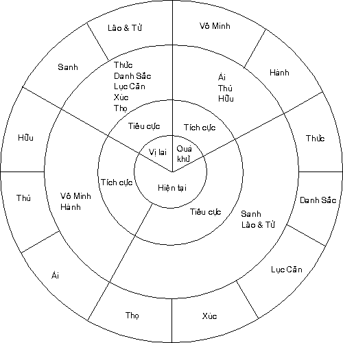
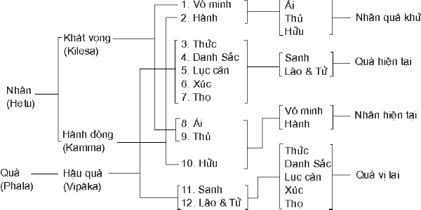

|
BuddhaSasana Home Page |
Vietnamese, with Unicode Times font |
ABHIDHAMMATTHASANGAHA
THẮNG PHÁP TẬP YẾU LUẬN
Tỳ kheo THÍCH MINH CHÂU
(dịch và giải)
|
CHƯƠNG VIII PACCAYA SANGAHO: TRỢ DUYÊN TẬP YẾU PHẦN MỘT - PATICCASAMUPPÀDA: DUYÊN-KHỞI I. PÀLI VĂN. - 1) Yesam sankhatadhammànam ye dhammàpaccayà yathà, 2) Paticcasamuppàdanayo, patthànanayo ceti paccayasangaho duvidho veditabbo. 3) Tattha tabbhàvabhàvibhàvàkàramattopalakkhito paticcasamuppàdanayo. Patthànanayo pana àhaccapaccayatthiti-màrabbha pavuccati. Ubhayam pana vomissitvà papancenti Àcariyà. II. THÍCH VĂN. - Sankhatadhammà: Các pháp hữu-vi. Vibhàga: Phân chia. Iha: Ở nơi đây. Idàni: Nay. Naya: Phương pháp, định - pháp. Patthàna: Phát thú, phát khởi, Duyên-hệ. Upalakkhito: Ðược phân biệt, chia chẻ. Tabbhàva-bhàvibhàva: Cái này sanh, dựa vào cái kia. Àkàra: Cách thức, điều kiện. Matta: Chỉ có. Àhacca: Có thể di động. Sau khi va chạm. Dẫn dụng. Àrabbha: Bắt đầu. Thito: Sự có mặt. Vomissitvà: Lẫn lộn, Papancenti: Trình bày, giải thích. Àcariyà: Các vị Luận sư. III. VIỆT VĂN. - 1) Nay, tôi sẽ giảng ở nơi đây, một cách thích hợp, như thế nào một pháp liên hệ với một pháp khác trong thế giới hữu vi. 2) Sự liên hệ ấy cần được hiểu theo hai cách: Duyên-khởi-pháp và Duyên-hệ-pháp (Phát thú pháp). 3) Ở đây, Duyên-khởi-pháp là sự liên hệ bị chi phối bởi định luật "Cái này sanh khởi, duyên vào cái kia". Duyên-hệ-pháp nói đến sự hiện hữu các điều kiện liên hệ với nhau. Các bậc Luận-sư giải thích xen lẫn hai pháp này. IV. THÍCH NGHĨA. - Paticcasamuppàda: Duyên - khởi. Paticca: Duyên, do vì, dựa vào. Samuppàda: Khởi. Ðây nói đến sự liên hệ giữa 12 pháp được gọi là paccaya và paccayuppanna (Nhân duyên và Duyên-khởi-pháp). Patthànanayo: Duyên hệ pháp. Theo các sớ Tích Lan, Pa: có nghĩa là nànappakàra (sai khác). Ngài Ledi Sayadaw (Miến Ðiện) giải thích là chính yếu (padhàna). Thàna: nghĩa là Paccaya (Duyên), và Upakàra-kadhamma, các điều kiện thêm vào hay ủng hộ. Các nhân duyên chính hay sai biệt này được diễn tả đầy đủ trong tập Patthàna (Duyên - Hệ) một trong bảy tập A-Tỳ-Ðàm của Thượng-Tọa-Bộ. Sự sai khác giữa hai định lý trên như sau: i) Do duyên với A, B khởi lên. Do duyên với B, C khởi lên. Khi không có A, B không có. Khi B không có, C cũng không. Nói một cách khác, "Cái này có, cái kia có; Cái này không, cái kia không (Imasmim sati, idam hoti; Imasmim asati, idam na hoti). Ðó là định lý Paticcasamuppmàda. ii) Khi chúng ta nói A liên hệ với B theo định lý câu sanh hay câu hữu, tức chúng ta nói đến Duyên-hệ-pháp. - Tabbhàvabhàvìbhàvàkàramatta:
I. PÀLI VĂN. - 4) Tattha avjjàpaccayà sankhàrà. Sankhàra-paccayà vinnànam. Vinnànapaccayà nàmarùpam. Nàmarù-papaccayà salàyatanam. Salàyatanapaccayà phasso. Phassapaccayà vedanà. Vedanà-paccayà tanhà. Tanhà-paccayà upàdànam. Upàdànapaccayà bhavo. Bhava-paccayà jàti. Jàtipaccayà jaràmarana - soka parideva-dukkha-domanassupàyàyà sambhavanti. Evametassa kevalassa dukkhakhandhassa samudayo hotì ti. Ayamettha paticcasamuppàdanayo. II. THÍCH VĂN. - Avijjà: Vô-minh. Sankhàrà: Hành. Soka-parideva dukkha-domanassa-upayàsà: Sầu-bi-khổ-ưu-não. III. VIỆT VĂN. - 4) Ở nơi đây, vô - minh duyên hành. Hành duyên thức. Thức duyên danh-sắc. Danh sắc duyên lục nhập. Lục nhập duyên xúc. Xúc duyên thọ. Thọ duyên ái. Ái duyên thủ. Thủ duyên hữu. Hữu duyên sanh. Sanh duyên lão-tử-sầu-bi-khổ-ưu-não. Như vậy là sự tập khởi của toàn bộ khổ-uẩn. IV. THÍCH NGHĨA. Avjjà: Vô-minh, nghĩa là không rõ 4 Ðế. Vô minh cũng có nghĩa là cái gì khiến chúng sanh trôi lăn trong bể khổ sanh tử bất tận (Antavirahite samsàre satte javàpeti). Paccaya: nghĩa là do duyên này mà quả sanh. Ðây chỉ cho nhân. Sankhàrà: Hành, có nhiều nghĩa. Ở đây chỉ cho các cetanà (tư), thiện, bất thiện và bất động (ànenjà), tạo thành các Nghiệp (kammà) phát sinh tái sanh. Bất thiện nghiệp gồm trong 12 Bất thiện tâm. Thiện nghiệp gồm 8 thiện nghiệp ở Dục giới và 5 thiện nghiệp ở sắc giới. Còn bất động nghiệp gồm 4 thiện nghiệp ở vô sắc giới. Vô minh có mặt trong bất thiện nghiệp nhưng tiềm tàng trong thiện nghiệp. Do vậy, cả thiện và bất thiện nghiệp do vô minh duyên sanh. Vinnàna (thức) đặc biệt chỉ cho 19 Patisandhi vinnàna (kiết sanh thức), được nói đến trong chương V. Tất cả 32 loại vipàkacitta (Dị-thục-tâm), được kinh nghiệm trong đời sống, cũng bao hàm trong danh từ này. Nàmarùpa: Danh-sắc cần phải hiểu riêng nàma, riêng rùpa và cả hai nàma và rùpa một lần. Khi nói đến vô sắc giới, thời chỉ có nàma khởi lên. Khi nói đến chúng sanh vô tưởng (asanna), thì chỉ có rùpa khởi lên. Khi nói đến Dục giới và sắc giới, thời khởi lên cả Danh và Sắc. Chữ nàma ở đây chỉ cho Thọ uẩn, Tưởng uẩn và Hành uẩn cùng khởi một lần với Kiết sanh thức. Chữ Rùpa ở đây chỉ cho 3 mười pháp: Thân 10 pháp, tánh 10 pháp và tâm sở y 10 pháp (kàya- bhàva vatthu), cùng khởi một lần với Kiết sanh thức bị kamma quá khứ chi phối. Pháp thứ hai và thứ ba thuộc quá khứ và hiện tại. Pháp thứ hai và thứ tư trái lại đồng khởi một lần. Tanhà: Ái có ba kàmatanhà (Dục ái), Bhavatanhà: Hữu ái, Vibhavatanhà: Vô hữu ái. Hữu ái là Dục ái tương ưng với thường kiến. Vô hữu ái là Dục ái tương ưng với đoạn kiến. Hữu ái cũng được xem là Sắc ái và vô hữu ái là vô sắc ái. Ái có 6, tương ưng với 6 trần: Sắc, thanh, hương, vị, xúc, pháp. Ái trở thành 12 nếu được chia nội trần ngoại trần. Ái trở thành 36 nếu chia thành quá khứ, hiện tại và vị lai. Khi nhân với ba loại ái trên, ái trở thành 108. Upàdàna: Thủ từ upa + à + dà, nghĩa là cho, tức là cường ái, kiên thủ. Tanhà như rờ mò trong bóng tối để ăn cắp một vật gì. Upàdàna là cử chỉ ăn cắp vật ấy. Bhava: Hữu, được giải thích cả hai nghĩa Kammabhava (Nghiệp hữu) chỉ cho những hoạt động thiện và bất thiện và upapatthibhava (sanh hữu), chỉ cho cảnh giới được tái sanh sau này. Sự sai khác giữa sankhàra (Hành) và Kammabhava là sankhàra chỉ cho quá khứ còn kammabhava là hiện tại. Jati (sanh) chỉ cho sự sanh khởi các uẩn (Khandhànam pàtubhàvo).
I. PÀLI VĂN. - 5) Tattha tayo addhà, dvàdasangàni, vìsatàkàrà, tìsandhi, catusankhepà, tìni vattàni, dve mùlàni ca veditabbàni. 6) Katham? Avijjà-sankhàrà atìto addhà. Jàti jaràmaranam anàgato addhà. Majjhe attha paccuppanno addhà tì tayo addhà, 7) Avijjà, sankhàrà, vinnànam, nàmarùpam, salàyatanam, phasso, vedanà, tanhà, upàdànam, bhavo, jàti, jaràmarananti dvàdasangàni. Sokàdivacanam panettha nissandaphalanidassanam. II. THÍCH VĂN. - Addhà: Thời gian. Dvàdasangàni: 12 chi. Vìsatàkàrà: 20 hành tướng. Tisandhi: Ba liên kiết. Catusankhepà: Tứ lược, tứ trùng. Tìnivattàni: Ba luân chuyển, Nissandaphala: Ðẳng lưu quả. III. VIỆT VĂN. - 5) Ở nơi đây cần phải hiểu có ba thời, 12 chi, 20 hành tướng, 3 liên kết, 4 lược, 3 chuyển, 2 căn. 6) Như thế nào? Vô minh, hành thuộc thời quá khứ, sanh lão, tử thuộc thời vị lai, 8 pháp ở giữa thuộc thời hiện tại. 7) Vô minh, hành, thức, danh sắc, lục nhập, xúc, thọ, ái, thủ, hữu, sanh, lão tử là 12 chi. Chữ sầu v.v... được nêu lên như Ðẳng lưu quả. 

I. PÀLI VĂN. - 8) Avijjàsankhàraggahanena panettha tan-hùpàdàna-bhavàpi gahità bhavanti. Tathà tanhùpàdàna - bha - vaggahanena ca avijjàsankhàrà, Jàtijarà-marana-ggahanena ca vinnànàdiphala-pancakameva gahitanti katvà. Atìte hetavo panca, idàni phalapancakam. 9)Avijjà-tanhùpàdànà ca kilesavattam; Kamma-bhavasankhàto; bhavekadeso sankhàrà ca kammavattam; upapattibhavasankhàto bhavekadeso avasesà ca vipàkavattam ti tìni vattàni. Avijjàtanhàvasena dve mùlàni ca veditabbàni. 10) esameva ca mùlànam nirodhena nirujjhati II. THÍCH VĂN. Kilesavattam: Phiền não luân chuyển. Kammabhavasankhàto: Ðược xem là nghiệp hữu. Bhavekadeso: Một phần của hữu. Kammavattam: Nghiệp luân chuyển. Upapattibhavasankhàto: Ðược xem là sanh hữu. Avasesà: Còn lại. Vipàkavattam: Dị thục luân chuyển. Nirodhena: Với sự diệt trừ. Nirujjhati: Ðược trừ diệt. Jaràmaranamucchàya: Bị cọ xát bởi già và chết. Pìlitànamabhinhaso: Luôn luôn bị áp bức hành hạ. Vattamàbandhamiccevan: Như vậy bị trói buộc phải làm luân chuyển. Tebhùmakamanàdikam: Ba giới vô thỉ. Patthapesi: Giới thiệu, giải thích. Mahàmuni: Ðại Mâu ni. III. VIỆT VĂN. - 9) Vô minh, ái, thủ thuộc về phiền não luân; một phần của hữu được gọi là nghiệp hữu và hành thuộc nghiệp luân; phần còn lại của hữu được gọi là sanh hữu thuộc Dị thục luân. Như vậy là ba luân chuyển. Vô minh và Ái là 2 căn. Cần phải hiểu như vậy. 10) sự diệt trừ những căn nguyên ấy mà sự luân chuyển chấm dứt. Vô minh được tiếp diễn, phát sinh do các lậu hoặc, luôn luôn bị bức bách bởi già và chết. Vị Ðại Mâu ni như vậy trình bày giải thích đời sống vô thỉ và buộc ràng này trong ba giới, dưới hình thức định lý Duyên khởi. PHẦN HAI - PATTHÀNAPACCAYO: DUYÊN HỆ DUYÊN I. PÀLI VĂN. - 11) Hetu-paccayo, àrammana-paccayo, adhipati paccayo, anantarapaccayo, samanantara-paccayo, sahajàta paccayo, annamanna - paccayo, nissayapaccayo, upanissayapaccayo, purejàtapaccayo, pacchàjàtapaccayo àsevana - paccayo, kamma-paccayo, vipàkapaccayo, àhàra-paccayo, indriyapaccayo, jhànapaccayo, maggapaccayo, sampayuttapaccayo, vippayutta-paccayo, atthi-paccayo, natthi-paccayo, vigata-paccayo, avigatapaccayo ti ayamettha patthànanayo. 12)Chaddhà nàmam tu nàmassa, pancadhà nàmarùpinam. II. THÍCH VĂN. - Hetupaccayo: Nhân duyên. Àrammanapaccayo: Sở duyên duyên. Adhipatipaccayo: Tăng thượng duyên. Anantarapaccayo: Vô gián duyên. Samanantara-paccayo: Ðẳng vô gián duyên. Sahajàtapaccayo: Câu sanh duyên. Annamannapaccayo: Hỗ tương duyên. Nissayapaccayo: Y chỉ duyên Upanissayapaccayo: Thân y duyên. Purejàtapaccayo: Tiền sanh duyên. Pacchàjàtapaccayo: Hậu sanh duyên. Àsevanapaccayo: Tập hành duyên. Àhàrapaccayo: Thực duyên. Sampayuttapaccayo: Tương ưng duyên. Atthipaccayo: Hữu duyên. Natthipaccaya: Vô hữu duyên. Vigatapaccaya: Ly khứ duyên. Avigatapaccayo: Bất ly khứ duyên. Pannatti: Giả danh, thi thiết. III. VIỆT VĂN. - 11) Ðịnh lý Duyên hệ như sau: Nhân duyên, Sở duyên duyên, Tăng thượng duyên, Vô gián duyên, Ðẳng vô gián duyên, Câu sanh duyên, Hỗ tương duyên, Y chỉ duyên, Thân y duyên, Tiền sanh duyên, Hậu sanh duyên, Tập hành duyên, Nghiệp duyên, Dị thục duyên, Thực duyên, Căn duyên, Thiền duyên, Ðạo duyên, Tương ưng duyên, Bất tương ưng duyên, Hữu duyên, Vô hữu duyên, Ly khứ duyên, Bất ly khứ duyên. 12) Danh liên hệ với danh theo 6 cách. Danh liên hệ với sắc theo một cách; sắc liên hệ với danh theo một cách; thi thiết và danh sắc liên hệ với danh theo một cách; danh sắc liên hệ với danh sắc theo chín cách. Như vậy sự liên hệ được đặt theo 6 loại. Như thế nào? IV. THÍCH NGHĨA. - Paccayadhamma (Duyên pháp) là một pháp giúp đỡ, một pháp khác gọi là Paccayuppanna-dhamma (Duyên khởi pháp) khởi lên. Hay pháp sau được khởi lên nhờ duyên với pháp trước. Sự liên hệ giữa giữa 2 pháp này được gọi là Paccaya và Paccaya này được đặt tên tùy thuộc theo đặc tánh của Paccaya Dhamma (Duyên pháp). Một ví dụ: Một Àrammana (Sở duyên pháp) là một Paccaya-dhamma (duyên pháp), liên hệ với tâm và các tâm sở khởi lên từ đối tượng này. Tâm và các tâm sở này được gọi là Paccayuppanna dhamma (Duyên khởi pháp), đối với các sở duyên pháp và sự liên hệ giữa hai pháp này được gọi là Àrammana paccaya (Sở duyên duyên), vì Paccaya dhamma trong trường hợp này hoạt động như một Àrammana của Paccayuppanna-dhamma. Như vậy nếu một tín đồ khởi lên thiện tâm khi thấy hình ảnh đức Phật, thời có thể nói "Buddharùpam upàsakassa kusalacittassa àrammana paccayena paccayo hoti". Hình ảnh đức Phật (Paccaya dhamma) liên hệ với thiện tâm của người tín đồ (Paccayuppanna-dhamma) bởi định lý Àrammana paccaya (Sở duyên duyên), vì Paccaya dhamma trong trường hợp này hoạt động như một Àrammana của Paccayuppanna dhamma (Duyên khởi pháp). Theo tập Patthàna, thời có tất cả là 24 định lý Paccaya như vậy, được đặt tên theo các Paccaya dhamma liên hệ. 1. Hetupaccaya: nhân duyên. Hetu ở đây dùng theo nghĩa căn (rễ). Như rễ nâng đỡ và nuôi dưỡng cây, cũng vậy Duyên pháp nâng đỡ và nuôi dưỡng Duyên khởi pháp. Các Hetu ở đây có sáu: Tham, sân, si, vô tham, vô sân và vô si. Các duyên khởi pháp là những tâm và tâm sở khởi lên, tương ưng với những nhân này, và các tập sắc câu hữu với các tâm sở này. 2. Àrammana paccaya: Sở duyên duyên. Ðây là một sự liên hệ, trong ấy Paccaya-dhamma là một đối tượng của Paccayuppanna, pháp này phải là một tâm thức hay tâm sở. Mọi tâm, tâm sở, sắc pháp. Niết Bàn, mọi quan niệm đều có thể là Paccaya dhamma trong sự liên hệ này. Sự thật, không có một pháp nào mà không thể thành một Àrammana (Sở duyên) cho tâm và tâm sở. Àrammana có sáu, tức là sắc, thanh, hương, vị, xúc và pháp. 3. Adhipatipaccaya: Tăng thượng duyên. Ðây là một sự liên hệ trong ấy, Paccayuppanna có một ảnh hưởng tăng thượng đối với Paccayupanna. Có hai loại Tăng thượng duyên. Àrammnanàdhipati-Paccaya: Sở duyên tăng thượng duyên và Sahàjàtàdhipatipaccaya: Câu sanh tăng thượng duyên. a) Sở duyên tăng thượng duyên là một liên hệ trong ấy. Paccaya dhamma có một ảnh hưởng tăng thượng đối với Paccayuppannadhamma. Paccayadhamma ở đây là một Àrammana và Duyên khởi pháp là một tâm hay tâm sở. Ðối tượng phải là một đối tượng rất dễ thương và khả ái. Hai sân tâm, hai si tâm; thân thức câu hữu với khổ và các tâm sở câu hữu không thể là Paccayadhamma của liên hệ này vì các tâm ấy không khả ái. Các tâm còn lại với các tâm sở câu hữu có thể là những Paccayadhamma, nếu chúng rất khả ái. Ledi Sayadaw dùng câu chuyện tiền thân Sutasoma để giải thích liên hệ này. Vua Porisàda, vì tham ăn thịt người đã bỏ cung điện, đi lang thang đó đây để thỏa mãn sự thèm khát của mình. Ở đây thịt người là Paccayadhamma của sở duyên Tăng thượng duyên. Tâm thức của Vua, dựa trên tham căn là Paccayuppannadhamma. Trái lại Sutasoma rất tôn trọng sự thật, bỏ cung điện, gia đình và cả thân mạng để tôn trọng sự thật cho đến vui lòng nạp mình cho Porisàda. Sự thật ở đây là Paccayadhamma và thiện tâm của Vua Sutasoma là Paccayuppannadhamma. b) Câu sanh tăng thượng duyên: Ở đây Paccayadhamma có ảnh hưởng tăng thượng trên Paccayuppannadhamma, pháp này câu sanh với pháp trên và có thể là tâm, tâm sở hay những sắc pháp do các tư tưởng tăng thượng chi phối. Những pháp câu sanh ở đây, đóng vai Paccayadhamma là 4: Chanda: Dục, Citta: tâm, Vìriya: tinh tấn và Vimansa: Quán huệ. 4. Anantarapaccaya: Vô gián duyên. Trong liên hệ này, Paccayadhamma đi liền trước, Paccayuppannadhamma theo sau. Trong một lộ trình của tâm thức, tâm khởi trước vừa diệt đi liên hệ với tâm sau tiếp nối liền, theo định lý vô gián duyên này. Như vậy, vô gián duyên này chi phối hoàn toàn đời sống của một cá nhân, từ vô thỉ đến vô chung, trừ phi chứng quả vô dư y Niết Bàn. 5. Samanantarapaccaya: Ðẳng vô gián duyên, như định lý trước. 6. Sahajàtapaccaya: Câu sanh duyên. Ở đây, Paccayadhamma đồng sanh với Paccayuppannadhamma. Cả hai đồng sanh, đồng trú và đồng diệt một lần. Ở đây. a) Các loại tâm đối với các tâm sở câu
sanh. 7. Annamannapaccaya: Hỗ tương duyên. Như cây chống ba chân, ba chân liên hệ với nhau trong hỗ tương duyên này. Ở đây câu sanh duyên và hỗ tương duyên không giống nhau. Như các sắc pháp do tâm sanh không có liên hệ hỗ tương với câu sanh tâm. Các pháp tứ đại sở tạo không có liên hệ hỗ tương với 4 Ðại chủng. Thường, tâm và sắc liên hệ theo hỗ tương duyên. 8. Nissayapaccaya: Y chỉ duyên. Ở đây Paccayadhamma là một chỗ sở y, chỗ nâng đỡ cho Paccayuppanna dựa vào, như cây mọc trên đất, như bức vẽ dựa trên khung vẽ. Các pháp sau đây bị chi phối bởi liên hệ này. a) Giống như số 6 và 7 9. Upanissayapaccaya: Thân y duyên. Có ba loại: a) Àrammanùpanissaya: Sở duyên thân y, b) Anantarùpanissaya: Vô gián thân y và Pakatùpanissaya: Tự nhiên thân y. Sở duyên thân y giống như sở duyên tăng thượng duyên và vô gián thân y giống như vô gián duyên. Tự nhiên thân y duyên là sự liên hệ trong ấy Paccayadhamma là một thân y tự nhiên đối với Paccayuppanna, pháp này là một tâm hiện tại với các tâm sở câu hữu. Tất cả mọi tâm quá khứ, hiện tại, vị lai, một ngoại với các tâm sở câu hữu, tất cả các sắc pháp. Nibbàna và Pannatti (quan điểm) đều là tự nhiên tân y duyên, liên hệ nhiều mặt tùy theo trường hợp cho tất cả tâm thức hiện tại với các tâm sở câu hữu. 10. Purejàta-paccaya: Tiền sanh duyên. Sáu căn và 5 trần liên hệ với các tâm thức được khởi lên theo Tiền sanh duyên. Nói một cách khác, nhãn thức v.v... không thể khởi lên nếu không có sự hiện hữu về trước của các căn và trần. Tuy vậy khi kiết sanh thức khởi, thì ý thức và tâm sở y (quả tim) cùng khởi một lần. 11. Pacchà-jàtapaccaya: Hậu sanh duyên. Trong liên hệ này. Paccayadhamma là tâm và tâm sở câu hữu, khởi lên sau Paccayuppannadhamma, thân của con người. Ở đây, Paccayadhamma giúp đỡ cho Paccayuppanna khởi lên, nhưng pháp này có mặt trước pháp kia. Như nước mưa của những năm kế tiến giúp đỡ cho cây cỏ đã mọc trước được tươi nhuận lớn lên. 12. Àsevana-paccaya: Tập hành duyên. Ở đây, Paccaya-dhamma, lặp đi lặp lại nhiều lần, giúp cho Paccayuppanna được mạnh hơn và điêu luyện hơn. Như một sinh viên hiểu và nhớ một đoạn văn nhiều hơn, nếu đọc đi đọc lại đoạn văn ấy nhiều lần. Tập hành duyên này chi phối một sát-na đến một sát-na tâm khác trong 47 Tốc hành tâm (Bất thiện tâm 12 + thiện tâm 8 + Ðại Hành tâm 9 + Duy tác tâm 18 = 47). Trong những tâm này, mỗi sát-na tâm giúp cho các tâm kế tiếp được mạnh hơn và điêu luyện hơn. 13. Kammapaccaya: Nghiệp duyên. Trong liên hệ này, Paccayadhamma là Cetanà (Tư tâm sở) đã hướng dẫn và điều hòa hành động; và Paccayuppanna là những tâm thức, các tâm sở và những sắc pháp do Nghiệp và Tâm tạo ra. 14. Vipàkapaccaya: Dị thục duyên. Trong liên hệ này, Paccayadhamma là 36 Dị thục tâm và các tâm sở câu hữu. Các Paccayuppanna dhamma cũng là những pháp Dị thục ấy khi chúng liên hệ hỗ tương, cũng như các sắc pháp do nghiệp và tâm sanh. Như đã nói: "4 tâm uẩn khi chúng là Dị thục tâm tương quan với nhau theo Dị thục duyên này". Như gió mát làm dịu lòng một người ngồi dưới gốc cây, cũng vậy các Dị thục tâm liên hệ các tâm và các sắc pháp câu hữu bởi liên hệ Dị thục duyên, vì đặc tánh thuần tịnh của chúng. 15) Àhàrapaccaya: Thực duyên, ở đây, Paccaya dhamma là 4 loại đồ ăn: Ðoàn thực, xúc thực, Tư thực (manosancetanà) và thức thực. Những món ăn này nuôi dưỡng các Tâm pháp và sắc pháp để chúng được duy trì, phát triển và trưởng thành. 16) Indriyapaccaya: Căn duyên, liên hệ này có 3 loại: Câu sanh, tiền sanh và mạng căn. Trong loại câu sanh, các Paccayadhamma là 15 căn câu sanh: mạng căn, ý căn, lạc căn, khổ căn, hỷ căn, ưu căn, xả căn, tín căn, tấn căn, niệm căn, định căn, tuệ căn, vị tri đương tri căn, dĩ tri căn, cụ tri căn. Còn Paccayuppanna là những pháp câu sanh cả tâm pháp và sắc pháp. Trong loại thứ hai, tiền sanh, Paccayadhamma là 5 căn, mắt, tai, mũi, lưỡi và thân. Còn các Paccayuppanna là 5 thức với các tâm sở câu hữu. Trong loại thứ ba, mạng căn, Paccayadhamma đây là mạng căn. Paccayuppanna dhamma là những sắc pháp do nghiệp sanh, trừ mạng căn. 17) Jhàna-paccaya: Thiền duyên. Chữ Jhàna hiểu theo nghĩa rộng, không phải chỉ thuộc sắc giới, vô sắc giới và siêu thế giới. Paccayadhamma ở đây là 7 Thiền chi - Tầm, Tứ, Hỷ, Lạc (Somanassa), ưu, xả, và nhứt tâm. Và Paccayuppanna là mọi tâm, trừ 5 thức, các tâm sở câu hữu và các sắc pháp câu sanh với 7 thiền chi. 18) Maggapaccaya: Ðạo duyên. Con đường chánh đưa đến Niết bàn. Con đường bất chánh đưa đến địa ngục. 12 Ðạo chi là những Paccaya Dhamma trong liên hệ này. Các Paccayuppanna dhamma là những tâm và tâm sở chi phối bởi các Hetu (nhân) và tất cả sắc pháp câu sanh với các Hữu nhân tâm (Sahetuka). 19) Sampayuttapaccaya: Tương ứng duyên. Tất cả tâm đều liên hệ với các tâm sở câu hữu theo định lý Tương ứng duyên này. 20) Vippayutta-paccaya: Bất tương ưng duyên. Ở đây Paccaya dhamma không tương ưng với Paccayuppanna. Như các tâm pháp liên hệ với các sắc pháp theo định lý này. 21 - 22) Atthipaccaya - natthipaccaya - vigatapaccaya. Avigatapaccaya: Hữu duyên, vô hữu duyên, Ly khứ duyên, Bất ly khứ duyên. Atthipaccaya giống với Avigatapaccaya. Natthipaccaya giống với Vigatapaccaya. Trong liên hệ đầu, Paccayadhamma có mặt với sự hiện hữu của Paccayuppanna. Trong liên hệ thứ hai, Paccayadhamma phải vắng mặt khi Paccayuppanna có mặt.
I. PÀLI VĂN: 13) Anantara - niruddhà cittacetasikà dhammà paccuppannànam cittacetasikànam dhammànam anantara-samanantara-natthi-vigatavasena, purimàni javanàni pacchimànam javanànam àsevanavasena, sahajàtà cittacetasikà dhammà annamannam, sampayuttavaseneti ca chaddhà nàmam nàmassa paccayo hoti. 14) Hetu-jhànanga-maggangàni sahajàtànam nàmarùpànam hetàdivasena. Sahajàtà cetanà sahajàtànam nàmarùpànam, nànàkkhanikà cetanà kammàbhinibbattànam nàmarùpànam kammavasena. Vipàkakkhandhà annamannann, sahajàtànam rùpànam vipàkavaseneti ca pancadhà nàmam nàmarùpànam paccayo hoti. 15) Pacchà-jàtà cittacetasikadhammà purejàtassa imassa kàyassa pacchàjàtavaseneti ekadhà va nàmam rùpassa paccayo hoti. II. THÍCH VĂN. - Purimàni: trước. Nànàkkhanikà: Dị sát na. III. VIỆT VĂN. - 13) Danh liên hệ với Danh theo 6 cách: Tâm và Tâm sở vừa mới diệt liên hệ với tâm và tâm sở hiện tại theo Vô gián duyên, Ðẳng vô gián duyên, Vô hữu duyên, Ly khứ duyên. Tốc hành tâm trước liên hệ với tốc hành tâm sau theo Tập hành duyên. Tâm và tâm sở câu hữu liên hệ với nhau theo Hỗ tương duyên. 14) Danh liên hệ với danh sắc theo 5 cách: Nhân, Thiền và Ðạo chi liên hệ với danh và sắc câu hữu theo Nhân duyên, Thiền duyên và Ðạo duyên. Câu sanh Tư (Cetanà) liên hệ với Danh và Sắc câu hữu và Dị sát na Tư liên hệ với Danh và Sắc do nghiệp sanh theo Nghiệp duyên. Các Dị thục uẩn (tâm pháp) liên hệ với nhau, và liên hệ với các sắc pháp câu sanh theo Dị thục duyên. 15) Danh liên hệ với Sắc chỉ theo 1 cách: Tâm và tâm sở được sanh khởi sau khi thân đã sanh, liên hệ với thân ấy theo Hậu sanh duyên. IV. THÍCH NGHĨA. - Dị sát na tư: (Nànàkkhanikà cetanà) là Tư tâm sở không cùng một thời gian với kết quả, nghĩa là thời gian Cetanà khởi lên khác với thời gian các quả khởi lên.
I. PÀLI VĂN. - 16) Cha vatthùni pavattiyam sattannam vinnànadhàtùnam, pancàrammanàni ca pancavinnàna - vìthiyà purejàtavaseneti ekadhà va rùpam nàmassa paccayo hoti. 17) Àrammanavasena upanissayavaseneti dvidhà pannattinàma-rùpàni namasseva paccayà hoti. Tattha rùpàdivasena chabbidham hoti àrammanam. 18) Upanissayo pana tividho hoti. Àrammanùpanissayo anantarùpanissayo, pakatùpanissayo ceti. 19). Tattha àrammanameva garukatam àrammanùpanissayo anantaraniruddhà cittacetasikà dhammà anantarùpanissayà. Ràgàdayo pana dhammà, saddhàdayo ca, sukham dukkham, puggalo, bhojanam, utu, senàsanam ca yathàraham ajjhatam ca bahiddhà ca kusalàdidhammànam, kammam vipà kànam ti ca bahudhà hoti pakatùpanissayo. II. THÍCH VĂN. - Pannatti: Thi thiết, khái niệm, giả danh, giả pháp. Pakatùpanissayo: Tự nhiên thân y. III. VIỆT VĂN. - 16) Sắc liên hệ với Danh chỉ theo một cách: 6 sở y pháp trong khi chuyển khởi, liên hệ với bảy thức giới, và năm sở duyên pháp, liên hệ với năm lộ trình của thức theo Tiền sanh duyên. 17) Các khái niệm, danh và sắc liên hệ với danh theo hai cách, tức là Sở duyên duyên và Thân y duyên, ở đây, sở duyên có 6, sắc, thanh v.v... 18) Nhưng thân y duyên có ba loại. Sở duyên thân y duyên, Vô gián thân y duyên và tự nhiên thân y duyên. 19) Ở nơi đây, sở duyên mạnh mẽ thuộc Sở duyên thân y duyên, các tâm và tâm sở mới diệt thuộc vô gián thân y duyên. Và tự nhiên thân y duyên có nhiều loại như các pháp tham v.v... Tín v.v... lạc, khổ, con người, món ăn, thời tiết, chỗ lưu trú v.v... - các pháp nội ngoại tùy theo trường hợp v.v... liên hệ với các pháp thiện v.v... Nghiệp cũng liên hệ với Nghiệp quả.
I. PÀLI VĂN. - 20) Adhipati-sahajàta-annamannanissay-àhàrindriya-vippayutta-atthi - avigatavaseneti yathàraham navadhà nàmarùpàni nàmarùpànam paccayà bhavanti. 21) Tattha garukatamàrammanam àrammanàdhi-pativasena nàmànam, sahajàtàdhipati catubbidho pi sahajàtavasena sahajàtànam nàmarùpànam ti ca duvidho hoti adhipatipaccayo. 22) Cittacetasikà dhammà annamannam sahajàtarùpànamca, mahàbhùtà annamannam upàdàrùpànanca, patisandhikkhane vatthuvipàkà annamannam ti ca tividho hoti sahajàtapaccayo. 23) Cittacetasikà dhammà annamannam, mahàbhùtà annamannam patisandhik khane vatthu-vipàkà annamannam ti ca tividho hoti annamanna-accayo. II. THÍCH VĂN. - Upàdàrùpa: Sở tạo sắc. Vatthuvipàka: Sở y và dị thục tâm. Patisandhikkhane: Kiết sanh sát na. III. VIỆT VĂN. - 20) Danh sắc liên hệ với Danh sắc theo 9 cách sau đây: Tăng thượng duyên, câu sanh duyên, hổ tương duyên, y chỉ duyên, thực duyên, căn duyên, bất tương ưng y duyên, hữu duyên, bất ly khứ duyên. 21) Ở đây, Tăng thượng duyên có hai loại: Sở duyên mạnh mẽ liên hệ với Danh theo Sở duyên tăng thượng; 4 câu sanh tăng thượng (Dục, tâm, tấn, quán hệ, (Chanda, Citta, Viriya, Vìmamsa) liên hệ với các danh sắc câu sanh theo câu sanh tăng thượng duyên. 22) Câu sanh duyên có ba loại: Các tâm và tâm sở liên hệ với nhau và với các sắc pháp câu sanh; 4 Ðại chủng liên hệ với nhau và với các sở tạo sắc (Upàdà-rùpa); Trong kiết sanh sát na, tâm sở y và các Dị thục tâm liên hệ với nhau theo câu sanh duyên. 23) Hổ tương duyên có ba loại: Các tâm và tâm sở liên hệ với nhau; 4 Ðại chủng liên hệ với nhau; trong kiết sanh sát na, tâm sở y (Hadayavatthu) và các Dị thục tâm liên hệ với nhau theo hỗ tương duyên. IV. THÍCH NGHĨA. - 4 Câu sanh tăng thượng đây chỉ cho: Dục, tâm, tinh tấn và quán huệ. 4 Ðại chủng là địa, thủy, hỏa, phong.
I. PÀLI VĂN. - 24) Cittacetasìkà dhammà annamannam sahajàtarùpànam ca, mahabhùtà annamannam upàdàrùpànam ca, cha vatthùni sattannam vinnàna-dhàtùnam ti ca tividho hoti nissayapaccayo. 25) Kabalìkàro àhàro imassa kàyassa, arùpino àhàrà sahajàtànam nàmarùpànam ti ca duvidho hoti àhàrapaccayo. 26) Panca pasàdà pancannam vinnànànam, rùpajìvitindriyam upàdinnarùpànam, arùpino indriyà sahajàtànam nàma-rùpànam ti ca tividho hoti indriyapaccayo. III. VIỆT VĂN. - 24) Y chỉ duyên có ba loại: Các tâm và tâm sở liên hệ với nhau và với các sắp pháp câu sanh; Bốn Ðại chủng liên hệ với nhau và với các sắc sở tạo, sáu tâm sở y liên hệ với bảy thức giới theo y chỉ duyên. 25) Thực duyên có hai loại: Ðoàn thực liên hệ với thân này, các vô sắc thực (xúc thực, tư duy thực và thức thực) liên hệ với các danh sắc câu xanh theo căn duyên. 26) Căn duyên có ba loại: 5 tịnh sắc căn liên hệ với 5 thức, chấp sắc mạng căn liên hệ với chấp thọ sắc, các vô sắc căn liên hệ với các danh sắc câu sanh theo căn duyên. I. PÀLI VĂN. - 27) Okkantikkhane vatthu vipàkànam, cittacetasikà dhammà sahajàtarùpànam sahajàtavasena; pacchàjàtà cittacetasikà dhammà purejàtassa imassa kàyassa pacehà-jàtavasena; cha vatthùni pavattiyam sattannam vinnàna-dhàtùnam purejàtavaseneti ca tividho hoti vippayuttapaccayo. 28) Sahajàtam purejàtam pacchàjàtam ca sabbathà. Kabalìkàro àhàro rùpajìvitamiccayanti. Pancavidho hoti atthi-paccayo avigatapaccayo ca. II. THÍCH VĂN. - Okkantikkhane: Nhập thai sát na. III. VIỆT VĂN. - 27) Bất tương ưng duyên có ba loại: Trong sát na nhập thai, tâm sở y liên hệ với các Dị thục tâm, các tâm và tâm sở liên hệ với các sắc pháp câu sanh theo câu sanh bất tương ưng duyên. Các tâm và các tâm sở hậu sanh liên hệ với thân tiền sanh này theo hậu sanh bất tương ưng duyên; Sáu căn sở y trong khi chuyển khởi liên hệ với bảy thức giới theo tiền sanh bất tương ưng duyên. 28) Hữu duyên và Bất ly khứ duyên có 5 loại: câu sanh, tiền sanh, hậu sanh, đoàn thực và sắc mạng căn trong mọi cách thuộc hữu duyên và Bất ly khứ duyên này.
I. PÀLI VĂN. - 29) Àrammanùpanissaya-kammatthipaccayesuca sabbe pi paccayà samodhànam gacchanti. 30) Sahajàtarùpam ti panettha sabbathà pi pavatte cittasamutthànànam, patisandhiyam katattàrùpànam ca vasena duvidham hoti veditabbam. 31) Iti tekàlikà dhammà kàlamuttà ca sambhavà II. THÍCH VĂN. - Samodhànam gacchanti: Ðều gồm vào. Katattàrùpànam: Nghiệp tạo sắc. Tekàlikà: Ba thời. Kàlammuttà: Vượt ngoài thời gian. Sambhavà: Sự sanh khởi. III. VIỆT VĂN. - 29) Tất cả các nhân duyên có thể gồm trong Sở duyên duyên, thân y duyên, nghiệp duyên và hữu duyên. 30) Ở đây, câu sanh sắc cần phải được hiểu theo hai cách: Trong sự diễn tiến cuộc sống, cần phải hiểu là những sắc do tâm sanh; và trong khi kiết sanh cần phải hiểu như là những sắc do nghiệp quá khứ tạo ra. 31) Như vậy các pháp sanh khởi thuộc ba thời gian hay vượt ngoài thời gian, nội và ngoại, hữu vi và vô vi, chia thành ba loại. Khái niệm danh và sắc. Tất cả, có 24 duyên trong Phát thú (Duyên hệ).
I. PÀLI VĂN. - 32) Tattha rùpadhammà rùpakkhandho va. Cittacetasika-sankhatà cattàro arùpino khandhà, nibbànam ceti pancavidhampi arùpam ti ca nàmam ti ca pavuccati. Tato avasesà pannatti pana pannàpiyattà pannatti, pannàpanato pannattì ti ca duvidhà hoti. 33) Katham? Tam-tam - bhùta - viparinàmàkàramupàdàya tathà tathà pannattà bhùmipabbatàdikà, sambhàra-sannivesà-kàramupàdàya geha-ratha-sakatàdikà, khandhapancakamupàdàya purisapuggalàdikà, candavattanàdikamupàdàya disàkà-làdikà, asamphutthàkàramupàdàya kùpa-guhàdikà, tam tam bhùtanimittam bhàvanàvisesam ca upàdàya. Kasinanimittàdikà ceti evamàdippabhedà pana paramatthato avjjamànàpi atthacchàyàkàrena cittuppàdanamàrammanabhùtà tam tam upàdàya upanidhàya kàranam katvà tathà tathà parikappiyamànà sankhàyati samannàyati vohariyati pannàpiyatìti pannattìti pavuccati. Ayam pannatti pannàpiyattà pannatti nàma. II. THÍCH VĂN. - Pannàpiyattà: Một khái niệm được hiểu đến. Pannàpanato: Một danh từ diễn đạt khái niệm ấy. Tam tam bhùta-viparinàmàkàramupàdàya: Khởi lên vì thể thức biến chuyển của các đại chủng. Tathà tathà pannattà: Ðược trình bày, xứng danh như vậy. Sambhàra-sannivesàkàramupàdàya: Khởi lên vì thể thức kết hợp các vật dụng (nguyên nhân). Geha-ratha-sakatàdika: Nhà, xe ngựa, xe bò v.v... Candavattanàdikamupàdàya: Khởi lên do sự vận chuyển của mặt trăng v.v... Disàkàlàdikà: Phương hướng, thời gian v.v... Asamphutthàkàramupàdàya: Khởi lên do thể thức không xúc chạm. Kùpaguhàdikà: Giếng, hang, v.v... Tam tam bhùtanimittam: Theo tướng sai biệt của các đại chủng. Bhàvanàvisesam: Sự sai khác của pháp tu tập. Kasinànimittadikà: Biến xứ tướng, v.v... Evamàdippabhedà: Những sự chia chẻ như vậy. Avijjamànà: Không xảy ra. Atthacchàyàkàrena: Dưới hình thức hình bóng của sự vật. Cittuppàdanamàrammanabhùtà: Trở thành đối tượng của tâm. Upàdàya: Chấp thủ. Upanidhàya: So sánh với. Kàranamkatvà: Làm bổn phận, trách nhiệm Parikappiyamànà: Ðược sửa soạn, được dụng ý. Sankhàyati: Suy nghĩ chín chắn. Samannàyati: Ðược hiểu. Vohariyati: Ðược trình bày, diễn đạt. Pannàpiyati: Ðược thấu hiểu. III. VIỆT VĂN. - 32) Ở nơi đây, sắc pháp tức là sắc uẩn. Tâm, tâm sở pháp, được gồm trong 4 vô sắc uẩn, và Niết bàn là 5 vô sắc pháp, và cũng được gọi là Danh. Ngoài ra các pháp còn lại được gọi là Pannatti (khái niệm) gồm có 2 phần: Ðược biết đến, bị biết đến gọi là khái niệm; hay danh xưng làm cho biết đến gọi là khái niệm. 33) Như thế nào? Có những danh từ như Ðất, núi, v.v... được gọi như vậy vì thể thức di chuyển của các đại; những danh từ như nhà, xe cộ v.v... được gọi như vậy vì thể thức kết hợp các vật dụng; những danh từ như người, hữu tình, được gọi vậy vì 5 uẩn; những danh từ như phương hướng, thời gian v.v... được gọi như vậy vì thể thức vận chuyển của mặt trăng v.v...; những danh từ như giếng, hang v.v... được gọi như vậy vì thể thức không bị xúc chạm v.v... Những danh từ như biến xứ tướng v.v... được gọi vậy vì sự sai khác của các pháp tu tập và vì tướng sai biệt của các đại chủng. Tất cả sự sai biệt như vậy, theo Ðệ nhất nghĩa đế, thật sự không có nhưng trở thành những đối tượng của tâm dưới hình thức hình bóng của sự vật. Chúng được gọi là "khái niệm" vì chúng được suy tưởng, được ý thức, được nhận hiểu, được biểu lộ, vì lý do, vì nguyên nhân, vì đối với thể thức này, thể thức khác. Khái niệm được gọi vậy vì chúng được biết, (được hiểu) là như vậy. IV. THÍCH NGHĨA. - Có 2 loại Pannatti (khái niệm): Atthapannatti: Nghĩa khái niệm, và Nàmapannatti: Danh khái niệm. Nghĩa khái niệm là làm cho được biết, nghĩa là vật thể, đối tượng do khái niệm diễn đạt. Danh khái niệm là làm cho biết, nghĩa là những tên đặt cho vật thể hay đối tượng. Ðất, núi, v.v... được gọi là Santhànà-pannatti, Hình sắc khái niệm, vì chúng diễn đạt hình tướng của sự vật. Xe, làng, nhà, được gọi là Samùha-pannatti: Tổng hợp khái niệm, vì chúng diễn đạt sự tổng hợp một số sự vật. Ðông, Tây v.v... được gọi là Disà-pannatti, Phương hướng khái niệm vì chúng diễn đạt địa phương. Sáng, trưa v.v... được gọi là kàlapannatti: Thời gian khái niệm vì chúng diễn đạt thời gian. Giếng, hang, v.v... được gọi là Àkàsapannatti: Hư không khái niệm vì chúng diễn tả hư không. Các hình ảnh tưởng tượng, quan niệm được gọi là nimitta-pannatti: Hình tướng khái niệm vì chúng diễn đạt những hình tướng do tu thiền định chứng được.
I. PÀLI VĂN. - 34) Pannàpanato pannatti pana nàmanàmakammà-dinàmena paridìpità. Sà vijjamàna-pannatti, avijjamàna-pannatti, vijjamànena avijjamàna-pannatti, avijjamànena vijjamànapannatti, vijjamàneva vijjamàna-pannatti, avijjamànena avijjamàna-pannatti ceti chabbidhà hoti. 35) Tattha yadà pana paramatthato vijjamànam rùpa-vedanàdim etàya pannàpenti, tadàyam vijjamànapannatti. Yadà pana paramatthato avijjamànam bhùmipabbatàdim etàya pannapenti, tadàyam avijjamàna-pannattì ti pavuccati. Ubhinnam pana vomissakavasena sesà yathàkkamam chalabhinno, itthisaddo, cakkhu-vinnànam ràjaputto ti ca veditabbà. 36) Vacì-ghosànusàrena sotavinnàna-vìthiyà II. THÍCH VĂN. - Pannàpanato: Làm cho biết. Paridìpità: Làm cho rõ, giải thích. Vijjamàna-pannatti: Khái niệm thật có Avijjamàna-pannatti: Khái niệm không thật có. Vijjamànena avijjamàna-pannatti: Khái niệm một vật không thật có với một vật thật có. Vomissakavasena: Do lẫn lộn cả hai. Vacìghosànusàrena: Do tùy theo tiếng nói. Sotavinnàna-vìthiyà. Do theo lộ trình của nhĩ thức. Pavattà-nantaruppannamanodvàrassa gocarà: Do phương tiện các khái niệm khởi lên nhờ ý môn, tiếp tục khởi lên. Gocara: Hành xứ, hành cảnh. Atthà vinnàyanti: Ý nghĩa được hiểu. Lokasanketanimmità: Như đã được quan niệm bởi thế tục. III. VIỆT VĂN. - 34) Vì làm cho biết, nên được gọi là Pannatti (khái niệm), được giải thích là Danh hay do Danh làm ra. Danh khái niệm có 6 loại: 1) Khái niệm một vật thật có, 2) Khái niệm một vật không thật có, 3) Khái niệm một vật không thật có với một vật thật có, 4) Khái niệm một vật thật có với một vật không thật có, 5) Khái niệm một vật thật có với một vật thật có, 6) Khái niệm một vật không thật có với một vật không thật có. 35) Ở đây, khi dùng danh từ để chỉ sắc, thọ v.v... những sự vật thật có, như vậy gọi là khái niệm một vật thật có. Khi dùng danh từ để chỉ đất, núi v.v... những sự vật không thật có, như vậy gọi là khái niệm một vật không thật có. Các khái niệm còn lại cần phải hiểu phối hợp cả hai, ví như một vị chứng 6 thắng trí, tiếng nói của người đàn bà, nhãn thức, hoàng tử v.v... 36) Khi một tiếng được nói lên, các lộ trình của nhĩ thức được khởi lên cho mỗi tiếng nói, và từ đó khởi lên các khái miệm ngang qua ý môn và nhờ đó các ý nghĩa được nhận hiểu. Các khái niệm ấy cần phải được hiểu như đã quan niệm bởi thế tục. IV. THÍCH NGHĨA. - 6 loại danh khái niệm được trình bày như sau: 1. Sắc, thọ v.v.... có thực theo chơn
đế. Ghi chú: Có thể tham chiếu thêm với:
-ooOoo- Ðầu trang | Mục lục | 01 | 02 | 03 | 04 | 05 | 06 | 07 | 08 | 09 | Phụ lục |
Chân thành cám ơn Tỳ kheo Thiện Minh đã gửi tặng bản vi tính (Bình Anson, 08-2002)
[Trở
về trang Thư Mục]
updated:
01-08-2002